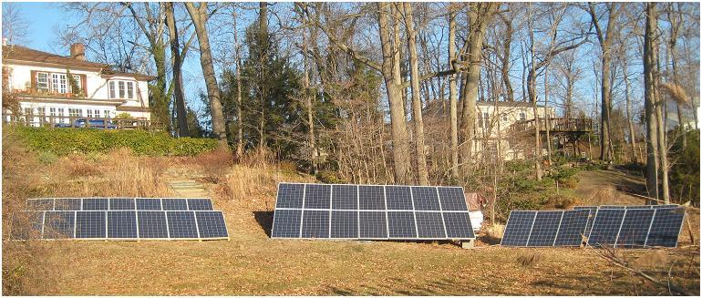
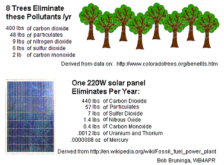

Solar Piers in Maryland
Solar Piers in Maryland
Solar Piers in Maryland
Solar Piers in Maryland
SOLAR TOUR 2 OCT 2021:
See my Video for the Solar Tour
If you are coming in person, please wear a mask and maintain 10' social distance.
If no answer at front door, come to side door to the right
--------------------------------------
July 2013: Solar Panels are no longer prohibited on Piers!
Here is the Annotated Code of Maryland:
16-104.pdf
And here is the email from MDE:
Email from MDE Water Management
This page describes my plans and frustrations starting in 2009 for installing solar in the sunny part of my waterfront home. I was the first to apply for a solar pier and also the first to obtain a variance for solar panels in the critical area 100' buffer. Hopefully some of this material will be useful to other waterfront owners around the Chesapeake Bay.
I'm happy to kibitz on your ideas for your pier.... at the email address above.
Partly due to my efforts and presentation to the MDE (Jan 2012), Solar Panels are now ALLOWED ON PIERS and in the critical buffer area in Maryland as a result of nearly 4 years of trying to get my 8kW solar array working on the shores of Chesapeake Bay waters. (As an aside, in the process, a few of us DIY guys have formed a group of other like minded solar power experimenters called SolarDIY)
Finally after 4 years and $2000 worth of permits we got the law changed so that the Maryland Department of the Environmnet no longer prohibits solar panels on piers. As you can see in the above photo, I finally was able to finish my pier and add solar panels to it. This photo is the outer 6 of my 12 panel permitted pier. But this 3 kW array is my most un-encumbered array with respect to shading, (though by 5:00 in the afternoon in late September you can see we are in the shade again, but this is far better than 2PM when my other arrays are shaded and so I hope it will produce 20% more than my other 3 kW arrays. Notice the emissions from the 500 MW AH Wagner coal plant on the edge of the Chesapeake Bay in the background of which I am no longer contributing!
12 March 2016 Update: It turns out my recommendations to the MDE (that were adopted) to limit the height of solar panels to no more than 4 feet above the deck (such as in my photo above) only makes sense on a floating pier. It would be disasterous on a fixed pier where hurricane-like flooding (Isabell) might rise over 5 feet above the pier deck in the Severn River. So as of this date, I have asked MDE to reconsider this height limit while retaining the limit on visual cross section. For example a nearly flat solar awning could be 7 feet high but when tilted at the Manufacturers minimum tilt angle (15 degrees) would still be a very low visual cross section of less than 18 inches as suggested in the drawing at right.
Tilt angles and Orientation: Even a flat horizontal panel will produce 80% of the annual energy as the properly tilted (40deg) South pointing array. Although a flat array produces little energy in the winter, it actually produces more than double the energy of the south facing array in the summer to make up for it. The only reason for the minimum 15 degree tilt is to allow rain water to wash them periodically, otherwise dust will pool and form a dirty layer. For a north-south running pier, tilting either way would give equal total power, but to help out the Grid, then tilt west if you have a choice. This moves the peak production of your array later in the day, and helps the grid keep up with the afternoon peak grid demand. For this reason, we even recommend that the state of Maryland add an additional premium incentive to arrays pointed more west than they would othewise. For example, if someone gives up 2% annual power production by facing more west than they could have and was optimum for his site, then she should get a 2% additional incentive to make up for it. The grid is what wins by having the later western sun.
The remainder of this page needs updating to this new reality, but Ill get to that in time.
Why Solar Panels on Piers? because Piers are almost always in full sun and the homes that have piers are also usually those with the means to invest in solar without any second thoughts. The real truth about solar is that despite our best intentions, here in Maryland typically 83% of homes are shaded and cannot produce meaningful power. We like shade to keep our air conditioning costs down. But this is counterproductive to solar. See the above aerial view of Severna Park. All the homes with good solar roofs are shown with a yellow dot and the 83% with shady roofs are shown with blue dots. (Remember, even partial shade drastically reduces solar potential. Even a 6" shadow completely knocks out every panel it hits). But there are 56 homes with piers that could install solar panels on them. These added 56 solar homes would nearly triple the percentage to an overall 50% solar.
 Solar is Cheap!
Solar Energy became cost effective in every state in the USA back around 2008 with costs per Watt
dropping from as high as $9 per watt down to $4 per watt by 2011 and around $2 per Watt installed
by 2013. The chart I posted here back in 2010 shows the 12:1 drop in panel prices
over the last decades and 4:1 drop
in just the last few years. This is due to the world exponential growth in production of solar PV panels. In Maryland, any investment in solar gives on the order of a 10% return on investment
for the rest of your life and gives electricity at about half the cost of the utilities. Beats
any bank anytime. Its such a great idea, even the utilities are doing them at enormous scale.
See
interactive Solar map of the USA. The
wind map is even more impressive!
Solar is Cheap!
Solar Energy became cost effective in every state in the USA back around 2008 with costs per Watt
dropping from as high as $9 per watt down to $4 per watt by 2011 and around $2 per Watt installed
by 2013. The chart I posted here back in 2010 shows the 12:1 drop in panel prices
over the last decades and 4:1 drop
in just the last few years. This is due to the world exponential growth in production of solar PV panels. In Maryland, any investment in solar gives on the order of a 10% return on investment
for the rest of your life and gives electricity at about half the cost of the utilities. Beats
any bank anytime. Its such a great idea, even the utilities are doing them at enormous scale.
See
interactive Solar map of the USA. The
wind map is even more impressive!
Now it is impossible to ignore the positive environmental and economic benefits of solar.
Grid-Tie is Golden! First, some background. You go solar to get economical clean power at less than half what you currently pay the utility. But you must remain connected to the grid for storage. Going Off-Grid makes NO SENSE (if you have it) because it nearly triples the cost compared to grid-tie and it condems you to a life of sacrifice, and maintenance issues due to having to maintain your own batteries for the rest of your life. Do not even consider going OFF-GRID if you have it! See why!

Solar Panels in the Critical Area 100' Buffer: My 8kW of panels shown above in 2010 were just propped up in my backyard on 2x4's because of my years long struggle to get county and state approvals to put them in the only sunny part of my yard, ON or near the water. Eventually, I was able to optain the first variance in the state for solar panels in the critical area 100' buffer. I went ahead and just installed them permanently there because the state had still not changed the prohibition against solar panels on piers and at this point, I was already committed to my yard.
History: Solar Piers Blocked by MDE! The Maryland Department of the Environment had denied applications in the past for solar panels on a pier, "because solar panels have nothing to do with the water", IE, they are not water dependent. The MDE considered the only approvable use of a pier on the Chesapeake Bay to be for access to a gas burning, oil-leaking, energy consuming, noise generating, bay-polluting, air-fouling fossil fuel stink-pot boat. That's OK. But putting solar panels on a pier to power a non-polluting, clean energy electric boat and routing the surplus back into the grid and provide the same improvement to the environment as 300 trees, was not! Solar panels do not depend on water but actually improve water quality as noted below.
Solar No Longer Prohibited! As of July 2013, MDE eliminated its statewide prohibition against solar or other energy production on piers and left it up to the local jurisdictions. These local jurisdictions can no longer block modest solar panels on piers by simply refering to the old MDE prohibition. The state no longer prohibits solar panels but (now, unfortunately) took my recommended limits of no-more-than 4' above the pier deck, no more than 1 foot below the deck and no more than 1' beyond existing pier authorizations. But you still have to get a variance to local zoning. Hopefully my first-variance will help you.
The example below was my original plan for a 6 kW array on a pier.
The above solar pier design in my original pier application back in 2010 was resoundingly rejected even after paying the nearly $2000 worth of zoning fees. The design fit completely within the standard limits for a pier, 100 feet long, with no more than 200 sqft of additional platform and no more than two 3' wide finger piers. MDE approved the pier (it met all requirements) but would not approve the design if it included the solar panels. At the same time, the plans were approved by Anne Arundel County, by the Army Corps of Engineers, by the Maryland Energy Administration and by both of my neighbors. Only the MDE law was in opposition to this clean energy project.
Maryland Bill HR 1266: Fortunately, in 2011, a bill was authored to make an exception for solar panels on piers. See HR 1266. This was presented to the Maryland House Committee on the Environment on March 2011. Only the Maryland Department of the Environment, the County Zoning representative and the delegate from Severna Park were opposed. It was killed in committee. Eventually I was able to brief an MDE committee (see presentation) considering this issue on 19 January 2012. Blame me for the 4', 1' and 1' restrictions noted above that I suggested in that presentation. Subsequently, and with no fanfair, in July 2013, MDE eliminated their prohibition though I did not find out about it until March 2014!
Pier Panel Design Alternatives: No one wants to see large obtrusive solar systems on piers, so the 4', 1', 1' restrictions were propsed to make sure that panels were not too high so even children can see over them and they dont substantially increase the water vegitation shading which is an issue for the bay. Within these restrictions, design decisions are based mostly on the orientation of your pier and on the value you place on the pier walking area versus solar production. There are two simple rules of thumb. First, better (lower) solar angles generally reduce the walking width of the pier. Second, the further from due south the alignment' the lower the tilt angle for best power production. The ideal array is South pointing with a tilt angle of 40 degrees. But with the 45 degree tilt angle shown above, you can obtain nearly maximum power production with only a modest reduction in walking-width. On many long piers, most of the length of the pier is only used for walking anyway, and so this is not a significant detractor. The example below shows the side view of this optimum, south facing design.
Pier Orientation: Surprisingly, pier orientation is not so important with grid tie because the only thing that matters is total annual production and since almost any angle in the summer will produce nearly double what an ideal south facing array produces in the winter, it almost makes up for it over the year total. As shown below, the ideal angle is south at 40 degrees here in Maryland. Using the gold-standard array performance predictor PV-watts, you can see that a 5.3 kW south pointing properly tilted array will produce about $920 annually.
But when pointing 45 degrees to the Southeast (or Southwest) the power only drops by 7% to 93%. But some of this can be regained by lowering the tilt angle to 20 degrees losing only 5% from ideal. Going further to due East would drop to 76% unless the tilt angle is similarly reduced to give 83% of the ideal. But notice, if you can get 83% pointing East, then you can also get 83% pointing West! If you can fit both of them on the pier, then the North/South oriented pier can actually generate nearly 166% of what the ideal South facing pier can do because you have double the pier area!. The problem is the narrow walkway. But since the solar panels can act as hand rails (if you raise them slightly), the walk is not that bad.
 SOLAR PIER VARIANCE: -- Historical Material used in my Variance Hearing --
SOLAR PIER VARIANCE: -- Historical Material used in my Variance Hearing --
In my creek-view photo at right, notice the smokestacks and 24/7 daily emissions of the 500 MegaWatt A.H. Wagner coal-fired generator plant just 4 miles down my creek on the shores of the Chesapeake Bay. By my calculations, just my home alone consumes about 10 mega-Watt-hours (mWh) of electricity per year. My 8 kW solar array could generate that same 10 mWh to eliminate completely my share of the pollution from that plant which amounts to:
22,000 lbs of Carbon Dioxide
350 lbs of sulfur dioxide
1 ounce of Uranium and Thorium
.00004 ounce of Mercury
All of this coal generated pollution that I am responsible for is falling on the nearby Chesapeake Bay and watershed and my creek. To counter this, I wanted to eliminate my contribution to this pollution by installing my 8 kW clean-solar system which would just about break even by producing my own annual 10 mWh's of clean-renewable-energy from the Sun. So, at my own expense, I was offering to clean up the Bay by putting solar panels on my pier, but was blocked by an outdated and short-sighted law of the Maryland Department of the Environment who, by the way, are charged with protecting not just the water under my pier, but the air above and the soil beneath.
On 16 April 2010 a reporter Eric Hartley did an article in the Annapolis Capital Newspaper and Tim Wheeler of the Baltimore Sun did a nice story in the paper on this issue (see photo at top of page). And also on his B'More green Blog. Despite the tremendous value and growth in solar in Maryland, apparently there was still zero progress by the Maryland MDE and MEA. . What follows next are the tribulations of my Plan-B which was ultimately successful. Solar panels in my yard...

Plan-B Solar-in-Yard: 21 Dec 2010 - So, after 9 months and $2000 of fees, the MDE's denial of panels on piers still stood. So I designed the panels to sit on the only sunny part of my lawn down by the water as suggested by the Secretary of MDE... "on an upland alternative". (Don't be fooled by the winter image above. My roof is more than 50% shaded throughout all times of the day and all months of the year.) So we submitted a building permit application in September 2010 only to be immediately DISAPPROVED! Maryland does not allow anything to be built within 100' of the shoreline (the Critical Area Buffer). So, with additional fees, I applied for a Variance. On 21 December 2010 I appeared before the Hearing Officer and presented my case. Here are some of the materials I used:
 .

 Environmental Benefits of Solar:
The above two images show the pollution-elimination impact of my solar project. Each
3'x5' panel eliminates about the
same amount of pollutants in a year as about 8 mature
trees remove in a year. This means a 42 panel array is equivalent to
the environmental benefits of about 300 trees compared to coal.
But even more telling is to look at not just the pollution impact of coal electricity,
but also the sheer magnitude of environmental distruction.
Environmental Benefits of Solar:
The above two images show the pollution-elimination impact of my solar project. Each
3'x5' panel eliminates about the
same amount of pollutants in a year as about 8 mature
trees remove in a year. This means a 42 panel array is equivalent to
the environmental benefits of about 300 trees compared to coal.
But even more telling is to look at not just the pollution impact of coal electricity,
but also the sheer magnitude of environmental distruction.
 Unseen Impact of Coal Electricity:
In the image to the far right are 4 tons of coal which is about the energy equivalent of the
10 mWhrs of energy our house requires per year. Not only do we energy-consuming-&-wasteful
Americans not see this tonnage, we also do not see the 80 tons of trees, topsoil, habitat
and dirt that has to be pushed off a mountain top in West Virginia and into the nearby
valleys and streams just to get to that coal. This 80 tons of decimation of the environment
PER YEAR for my one house is shown in the near image to the right which shows four 20 ton freight
cars needed to move that debris. The next image below right is just one of the hundreds
of mountains and habitat in West Virginia being destroyed for our coal energy addiction...
Folks, this approach to our environment IS NOT SUSTAINABLE!
Unseen Impact of Coal Electricity:
In the image to the far right are 4 tons of coal which is about the energy equivalent of the
10 mWhrs of energy our house requires per year. Not only do we energy-consuming-&-wasteful
Americans not see this tonnage, we also do not see the 80 tons of trees, topsoil, habitat
and dirt that has to be pushed off a mountain top in West Virginia and into the nearby
valleys and streams just to get to that coal. This 80 tons of decimation of the environment
PER YEAR for my one house is shown in the near image to the right which shows four 20 ton freight
cars needed to move that debris. The next image below right is just one of the hundreds
of mountains and habitat in West Virginia being destroyed for our coal energy addiction...
Folks, this approach to our environment IS NOT SUSTAINABLE!
 Variance Issues: With the proponderance of benefits of my solar project
in my front yard, the County did agree that the varance was appropriate, but with one big
catch-22 provision. They requested that there be the standard mitigation for any variance in the
100' foot critical area buffer. This means that the disturbance in the
buffer area (690 square feet) must be offset with 3-to-1 or 2000 square feet of new
trees. In otherwords, I can have the solar panels, but I have to plant so many
trees in compensation that my lawn becomes a forest and we are back to square-ONE,
that is, no solar access!
Variance Issues: With the proponderance of benefits of my solar project
in my front yard, the County did agree that the varance was appropriate, but with one big
catch-22 provision. They requested that there be the standard mitigation for any variance in the
100' foot critical area buffer. This means that the disturbance in the
buffer area (690 square feet) must be offset with 3-to-1 or 2000 square feet of new
trees. In otherwords, I can have the solar panels, but I have to plant so many
trees in compensation that my lawn becomes a forest and we are back to square-ONE,
that is, no solar access!
The Hearing Judge rolled his eyes at that Zoning office requirement but approved the variance but specifically without ruling on the Mitigation issue. To date (2014) the state still does not recognize the 8-to-1 self-mitigating benefits of Solar panels to the environment. And still maintains that they are non-permeable despite the fact that there are 1/4" gaps between all the panels so rain falls through right on to the earth beneath.
(YOUR MILEAGE MAY VARY!)...
Bottom line: . The time is now to go solar! We cannot continue to send
billions of dollars a day overseas to buy polluting oil and continue
to decimate West Virginia for our energy needs
when free-sustainable energy is right there outside our door. Don't forget that coal
electricity is just part of our dirty legacy habits. Consider also about your total
energy footprint and consider how to reduce or eliminate your fossil burning
transpotrtation demands by doing all your local travel and
daily commuting via an Electric Vehicle(EV).
Here are some overlaping and somewhat related pages:
Bob Bruninga, PE,
.
See Sitemap to over 450 of Bob's othe web pages.
.
A concerned, environmental individual
Email: wb4apr@amsat.org
{kind=link}
{kind=link}
{kind=link}
{kind=link}